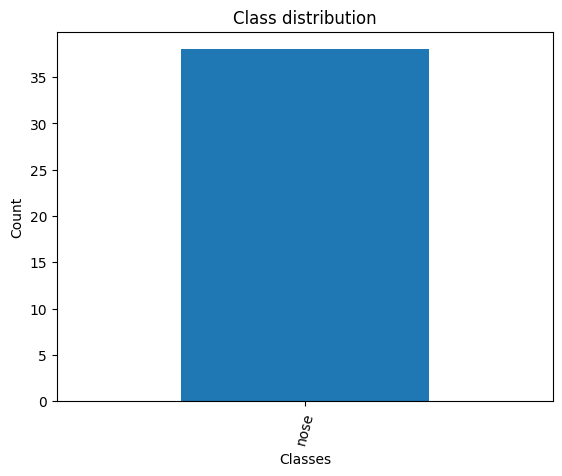
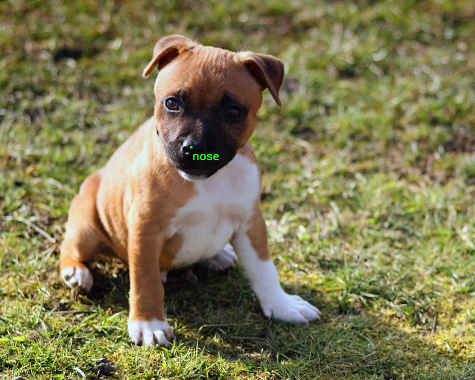
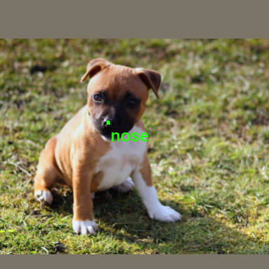
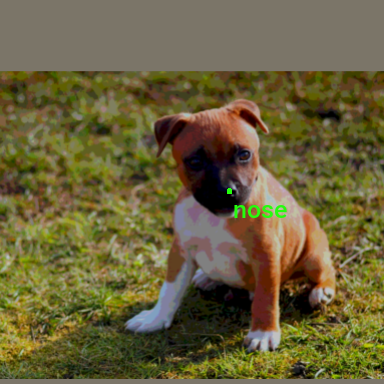

Working with LabelMe Keypoint Annotations in Torchvision
- Introduction
- Getting Started with the Code
- Setting Up Your Python Environment
- Importing the Required Dependencies
- Loading and Exploring the Dataset
- Preparing the Data
- Conclusion
Introduction
Welcome to this hands-on guide for working with keypoint annotations created with the LabelMe annotation tool in torchvision. Keypoint annotations mark specific points of interest on an object in an image for training models to recognize and interpret poses, gestures, or significant parts of objects.
The tutorial walks through setting up a Python environment, loading the raw annotations into a Pandas DataFrame, annotating and augmenting images using torchvision’s Transforms V2 API, and creating a custom Dataset class to feed samples to a model.
This guide is suitable for beginners and experienced practitioners, providing the code, explanations, and resources needed to understand and implement each step. By the end, you will have a solid foundation for working with keypoint annotations made with LabelMe for keypoint estimation tasks.
Getting Started with the Code
The tutorial code is available as a Jupyter Notebook, which you can run locally or in a cloud-based environment like Google Colab. I have dedicated tutorials for those new to these platforms or who need guidance setting up:
| Jupyter Notebook: | GitHub Repository | Open In Colab |
|---|---|---|
Setting Up Your Python Environment
Before diving into the code, we’ll cover the steps to create a local Python environment and install the necessary dependencies.
Creating a Python Environment
First, we’ll create a Python environment using Conda/Mamba. Open a terminal with Conda/Mamba installed and run the following commands:
# Create a new Python 3.10 environment
conda create --name pytorch-env python=3.10 -y
# Activate the environment
conda activate pytorch-env# Create a new Python 3.10 environment
mamba create --name pytorch-env python=3.10 -y
# Activate the environment
mamba activate pytorch-envInstalling PyTorch
Next, we’ll install PyTorch. Run the appropriate command for your hardware and operating system.
# Install PyTorch with CUDA
pip install torch torchvision torchaudio --index-url https://download.pytorch.org/whl/cu121# MPS (Metal Performance Shaders) acceleration is available on MacOS 12.3+
pip install torch torchvision torchaudio# Install PyTorch for CPU only
pip install torch torchvision torchaudio --index-url https://download.pytorch.org/whl/cpu# Install PyTorch for CPU only
pip install torch torchvision torchaudioInstalling Additional Libraries
We also need to install some additional libraries for our project.
| Package | Description |
|---|---|
jupyter |
An open-source web application that allows you to create and share documents that contain live code, equations, visualizations, and narrative text. (link) |
matplotlib |
This package provides a comprehensive collection of visualization tools to create high-quality plots, charts, and graphs for data exploration and presentation. (link) |
pandas |
This package provides fast, powerful, and flexible data analysis and manipulation tools. (link) |
pillow |
The Python Imaging Library adds image processing capabilities. (link) |
tqdm |
A Python library that provides fast, extensible progress bars for loops and other iterable objects in Python. (link) |
distinctipy |
A lightweight python package providing functions to generate colours that are visually distinct from one another. (link) |
Run the following commands to install these additional libraries:
# Install additional dependencies
pip install distinctipy jupyter matplotlib pandas pillow tqdmInstalling Utility Packages
We will also install some utility packages I made, which provide shortcuts for routine tasks.
| Package | Description |
|---|---|
cjm_pil_utils |
Some PIL utility functions I frequently use. (link) |
cjm_psl_utils |
Some utility functions using the Python Standard Library. (link) |
cjm_pytorch_utils |
Some utility functions for working with PyTorch. (link) |
cjm_torchvision_tfms |
Some custom Torchvision tranforms. (link) |
Run the following commands to install the utility packages:
# Install additional utility packages
pip install cjm_pil_utils cjm_psl_utils cjm_pytorch_utils cjm_torchvision_tfmsWith our environment set up, we can open our Jupyter Notebook and dive into the code.
Importing the Required Dependencies
First, we will import the necessary Python packages into our Jupyter Notebook.
# Import Python Standard Library dependencies
from functools import partial
from pathlib import Path
# Import utility functions
from cjm_pil_utils.core import get_img_files
from cjm_psl_utils.core import download_file, file_extract
from cjm_pytorch_utils.core import tensor_to_pil
from cjm_torchvision_tfms.core import ResizeMax, PadSquare, CustomRandomIoUCrop
# Import the distinctipy module
from distinctipy import distinctipy
# Import matplotlib for creating plots
import matplotlib.pyplot as plt
# Import numpy
import numpy as np
# Import the pandas package
import pandas as pd
# Do not truncate the contents of cells and display all rows and columns
pd.set_option('max_colwidth', None, 'display.max_rows', None, 'display.max_columns', None)
# Import PIL for image manipulation
from PIL import Image
# Import PyTorch dependencies
import torch
from torch.utils.data import Dataset, DataLoader
# Import torchvision dependencies
import torchvision
torchvision.disable_beta_transforms_warning()
from torchvision.tv_tensors import BoundingBoxes
from torchvision.utils import draw_bounding_boxes
import torchvision.transforms.v2 as transforms
# Import tqdm for progress bar
from tqdm.auto import tqdmTorchvision provides dedicated torch.Tensor subclasses for different annotation types called TVTensors. Torchvision’s V2 transforms use these subclasses to update the annotations based on the applied image augmentations. While there is currently no dedicated TVTensor class for keypoint annotations, we can use the one for bounding boxes instead. Torchvision does include a draw_keypoints function, but we might as well stick with the draw_bounding_boxes function to annotate images.
Loading and Exploring the Dataset
After importing the dependencies, we can start working with our data. I annotated a toy dataset with keypoints for this tutorial using images from the free stock photo site Pexels. The dataset is available on HuggingFace Hub at the link below:
- Dataset Repository: labelme-keypoint-toy-dataset
Setting the Directory Paths
We first need to specify a place to store our dataset and a location to download the zip file containing it. The following code creates the folders in the current directory (./). Update the path if that is not suitable for you.
# Define path to store datasets
dataset_dir = Path("./Datasets/")
# Create the dataset directory if it does not exist
dataset_dir.mkdir(parents=True, exist_ok=True)
# Define path to store archive files
archive_dir = dataset_dir/'../Archive'
# Create the archive directory if it does not exist
archive_dir.mkdir(parents=True, exist_ok=True)
# Creating a Series with the paths and converting it to a DataFrame for display
pd.Series({
"Dataset Directory:": dataset_dir,
"Archive Directory:": archive_dir
}).to_frame().style.hide(axis='columns')| Dataset Directory: | Datasets |
|---|---|
| Archive Directory: | Datasets/../Archive |
Setting the Dataset Path
Next, we construct the name for the Hugging Face Hub dataset and set where to download and extract the dataset.
# Set the name of the dataset
dataset_name = 'labelme-keypoint-toy-dataset'
# Construct the HuggingFace Hub dataset name by combining the username and dataset name
hf_dataset = f'cj-mills/{dataset_name}'
# Create the path to the zip file that contains the dataset
archive_path = Path(f'{archive_dir}/{dataset_name}.zip')
# Create the path to the directory where the dataset will be extracted
dataset_path = Path(f'{dataset_dir}/{dataset_name}')
# Creating a Series with the dataset name and paths and converting it to a DataFrame for display
pd.Series({
"HuggingFace Dataset:": hf_dataset,
"Archive Path:": archive_path,
"Dataset Path:": dataset_path
}).to_frame().style.hide(axis='columns')| HuggingFace Dataset: | cj-mills/labelme-keypoint-toy-dataset |
|---|---|
| Archive Path: | Datasets/../Archive/labelme-keypoint-toy-dataset.zip |
| Dataset Path: | Datasets/labelme-keypoint-toy-dataset |
Downloading the Dataset
We can now download the archive file and extract the dataset using the download_file and file_extract functions from the cjm_psl_utils package. We can delete the archive afterward to save space.
# Construct the HuggingFace Hub dataset URL
dataset_url = f"https://huggingface.co/datasets/{hf_dataset}/resolve/main/{dataset_name}.zip"
print(f"HuggingFace Dataset URL: {dataset_url}")
# Set whether to delete the archive file after extracting the dataset
delete_archive = True
# Download the dataset if not present
if dataset_path.is_dir():
print("Dataset folder already exists")
else:
print("Downloading dataset...")
download_file(dataset_url, archive_dir)
print("Extracting dataset...")
file_extract(fname=archive_path, dest=dataset_dir)
# Delete the archive if specified
if delete_archive: archive_path.unlink()Getting the Image and Annotation Files
The dataset folder contains sample images and annotation files. Each sample image has its own JSON annotation file.
# Get a list of image files in the dataset
img_file_paths = get_img_files(dataset_path)
# Get a list of JSON files in the dataset
annotation_file_paths = list(dataset_path.glob('*.json'))
# Display the names of the folders using a Pandas DataFrame
pd.DataFrame({"Image File": [file.name for file in img_file_paths],
"Annotation File":[file.name for file in annotation_file_paths]}).head()| Image File | Annotation File | |
|---|---|---|
| 0 | 133196.jpg | 133196.json |
| 1 | 245035.jpg | 245035.json |
| 2 | 245036.jpg | 245036.json |
| 3 | 247937.jpg | 247937.json |
| 4 | 3172614.jpg | 3172614.json |
Get Image File Paths
Each image file has a unique name that we can use to locate the corresponding annotation data. We can make a dictionary that maps image names to file paths. The dictionary will allow us to retrieve the file path for a given image more efficiently.
# Create a dictionary that maps file names to file paths
img_dict = {file.stem : file for file in img_file_paths}
# Print the number of image files
print(f"Number of Images: {len(img_dict)}")
# Display the first five entries from the dictionary using a Pandas DataFrame
pd.DataFrame.from_dict(img_dict, orient='index').head()Number of Images: 38| 0 | |
|---|---|
| 133196 | Datasets/labelme-keypoint-toy-dataset/133196.jpg |
| 245035 | Datasets/labelme-keypoint-toy-dataset/245035.jpg |
| 245036 | Datasets/labelme-keypoint-toy-dataset/245036.jpg |
| 247937 | Datasets/labelme-keypoint-toy-dataset/247937.jpg |
| 3172614 | Datasets/labelme-keypoint-toy-dataset/3172614.jpg |
Get Image Annotations
Next, we read the content of each JSON annotation file into a single Pandas DataFrame so we can easily query the annotations.
# Create a generator that yields Pandas DataFrames containing the data from each JSON file
cls_dataframes = (pd.read_json(f, orient='index').transpose() for f in tqdm(annotation_file_paths))
# Concatenate the DataFrames into a single DataFrame
annotation_df = pd.concat(cls_dataframes, ignore_index=False)
# Assign the image file name as the index for each row
annotation_df['index'] = annotation_df.apply(lambda row: row['imagePath'].split('.')[0], axis=1)
annotation_df = annotation_df.set_index('index')
# Keep only the rows that correspond to the filenames in the 'img_dict' dictionary
annotation_df = annotation_df.loc[list(img_dict.keys())]
# Print the first 5 rows of the DataFrame
annotation_df.head()| version | flags | shapes | imagePath | imageData | imageHeight | imageWidth | |
|---|---|---|---|---|---|---|---|
| index | |||||||
| 133196 | 5.3.1 | {} | [{‘label’: ‘nose’, ‘points’: [[386.70731707317077, 297.109756097561]], ‘group_id’: None, ‘description’: ’‘, ’shape_type’: ‘point’, ‘flags’: {}}] | 133196.jpg | None | 768 | 960 |
| 245035 | 5.3.1 | {} | [{‘label’: ‘nose’, ‘points’: [[334.4587155963303, 319.57798165137615]], ‘group_id’: None, ‘description’: ’‘, ’shape_type’: ‘point’, ‘flags’: {}}] | 245035.jpg | None | 1152 | 768 |
| 245036 | 5.3.1 | {} | [{‘label’: ‘nose’, ‘points’: [[226.8571428571429, 240.80357142857144]], ‘group_id’: None, ‘description’: ’‘, ’shape_type’: ‘point’, ‘flags’: {}}] | 245036.jpg | None | 1120 | 768 |
| 247937 | 5.3.1 | {} | [{‘label’: ‘nose’, ‘points’: [[454.6585365853659, 230.03658536585363]], ‘group_id’: None, ‘description’: ’‘, ’shape_type’: ‘point’, ‘flags’: {}}] | 247937.jpg | None | 768 | 1152 |
| 3172614 | 5.3.1 | {} | [{‘label’: ‘nose’, ‘points’: [[539.4146341463414, 608.0853658536585]], ‘group_id’: None, ‘description’: ’‘, ’shape_type’: ‘point’, ‘flags’: {}}] | 3172614.jpg | None | 768 | 1152 |
The source JSON content corresponding to the first row in the DataFrame is available below:
{
"version": "5.3.1",
"flags": {},
"shapes": [
{
"label": "nose",
"points": [
[
386.70731707317077,
297.109756097561
]
],
"group_id": null,
"description": "",
"shape_type": "point",
"flags": {}
}
],
"imagePath": "133196.jpg",
"imageData": null,
"imageHeight": 768,
"imageWidth": 960
}With the annotations loaded, we can start inspecting our dataset.
Inspecting the Class Distribution
First, we get the names of all the classes in our dataset and inspect the distribution of samples among these classes. This step won’t yield any insights for the toy dataset but is worth doing for real-world projects. A balanced dataset (where each class has approximately the same number of instances) is ideal for training a machine-learning model.
Get image classes
# Explode the 'shapes' column in the annotation_df dataframe
# Convert the resulting series to a dataframe and rename the 'shapes' column to 'shapes'
# Apply the pandas Series function to the 'shapes' column of the dataframe
shapes_df = annotation_df['shapes'].explode().to_frame().shapes.apply(pd.Series)
# Get a list of unique labels in the 'annotation_df' DataFrame
class_names = shapes_df['label'].unique().tolist()
# Display labels using a Pandas DataFrame
pd.DataFrame(class_names)| 0 | |
|---|---|
| 0 | nose |
Visualize the class distribution
# Get the number of samples for each object class
class_counts = shapes_df['label'].value_counts()
# Plot the distribution
class_counts.plot(kind='bar')
plt.title('Class distribution')
plt.ylabel('Count')
plt.xlabel('Classes')
plt.xticks(range(len(class_counts.index)), class_counts.index, rotation=75) # Set the x-axis tick labels
plt.show()
Visualizing Image Annotations
In this section, we will annotate a single image with its keypoints using torchvision’s BoundingBoxes class and draw_bounding_boxes function.
Generate a color map
While not required, assigning a unique color to keypoints for each object class enhances visual distinction, allowing for easier identification of different objects in the scene. We can use the distinctipy package to generate a visually distinct colormap.
# Generate a list of colors with a length equal to the number of labels
colors = distinctipy.get_colors(len(class_names))
# Make a copy of the color map in integer format
int_colors = [tuple(int(c*255) for c in color) for color in colors]
# Generate a color swatch to visualize the color map
distinctipy.color_swatch(colors)Download a font file
The draw_bounding_boxes function included with torchvision uses a pretty small font size. We can increase the font size if we use a custom font. Font files are available on sites like Google Fonts, or we can use one included with the operating system.
# Set the name of the font file
font_file = 'KFOlCnqEu92Fr1MmEU9vAw.ttf'
# Download the font file
download_file(f"https://fonts.gstatic.com/s/roboto/v30/{font_file}", "./")Define the bounding box annotation function
We can make a partial function using draw_bounding_boxes since we’ll use the same box thickness and font each time we visualize bounding boxes.
draw_bboxes = partial(draw_bounding_boxes, fill=True, width=4, font=font_file, font_size=25)Selecting a Sample Image
We can use the unique ID for an image in the image dictionary to get the image file path and the associated annotations from the annotation DataFrame.
Load the sample image
# Get the file ID of the first image file
file_id = list(img_dict.keys())[0]
# Open the associated image file as a RGB image
sample_img = Image.open(img_dict[file_id]).convert('RGB')
# Print the dimensions of the image
print(f"Image Dims: {sample_img.size}")
# Show the image
sample_imgImage Dims: (960, 768)Inspect the corresponding annotation data
# Get the row from the 'annotation_df' DataFrame corresponding to the 'file_id'
annotation_df.loc[file_id].to_frame()| 133196 | |
|---|---|
| version | 5.3.1 |
| flags | {} |
| shapes | [{‘label’: ‘nose’, ‘points’: [[386.70731707317077, 297.109756097561]], ‘group_id’: None, ‘description’: ’‘, ’shape_type’: ‘point’, ‘flags’: {}}] |
| imagePath | 133196.jpg |
| imageData | None |
| imageHeight | 768 |
| imageWidth | 960 |
Annotate sample image
We can convert our keypoint annotations to bounding boxes by adding values for box width and height, making it [center-x, center-y, width, height] format
The draw_bounding_boxes function expects bounding box annotations in [top-left X, top-left Y, bottom-right X, bottom-right Y] format, so we’ll use the box_convert function included with torchvision to convert the bounding box annotations from [cx,cy,w,h] to [x,y,x,y] format.
We can reverse this process during training to extract the target keypoints for calculating the loss.
# Extract the labels and keypoint annotations for the sample image
labels = [shape['label'] for shape in annotation_df.loc[file_id]['shapes']]
keypoints = torch.tensor(np.array([shape['points'] for shape in annotation_df.loc[file_id]['shapes']])).reshape(1,2)
keypoints_bboxes = torch.cat((keypoints, torch.ones(len(keypoints), 2)*4), dim=1)
# Annotate the sample image with labels and bounding boxes
annotated_tensor = draw_bboxes(
image=transforms.PILToTensor()(sample_img),
boxes=torchvision.ops.box_convert(torch.Tensor(keypoints_bboxes), 'cxcywh', 'xyxy'),
labels=labels,
colors=[int_colors[i] for i in [class_names.index(label) for label in labels]]
)
tensor_to_pil(annotated_tensor)
We have loaded the dataset, inspected its class distribution, and visualized the annotations for a sample image. In the final section, we will cover how to augment images using torchvision’s Transforms V2 API and create a custom Dataset class for training.
Preparing the Data
In this section, we will first walk through a single example of how to apply augmentations to a single annotated image using torchvision’s Transforms V2 API before putting everything together in a custom Dataset class.
Data Augmentation
Here, we will define some data augmentations to apply to images during training. I created a few custom image transforms to help streamline the code.
The first extends the RandomIoUCrop transform included with torchvision to give the user more control over how much it crops into bounding box areas. The second resizes images based on their largest dimension rather than their smallest. The third applies square padding and allows the padding to be applied equally on both sides or randomly split between the two sides.
All three are available through the cjm-torchvision-tfms package.
Set training image size
Next, we will specify the image size to use during training.
# Set training image size
train_sz = 384Initialize custom transforms
Now, we can initialize the transform objects.
# Create a RandomIoUCrop object
iou_crop = CustomRandomIoUCrop(min_scale=0.3,
max_scale=1.0,
min_aspect_ratio=0.5,
max_aspect_ratio=2.0,
sampler_options=[0.0, 0.1, 0.3, 0.5, 0.7, 0.9, 1.0],
trials=400,
jitter_factor=0.25)
# Create a `ResizeMax` object
resize_max = ResizeMax(max_sz=train_sz)
# Create a `PadSquare` object
pad_square = PadSquare(shift=True)Test the transforms
Torchvision’s V2 image transforms take an image and a targets dictionary. The targets dictionary contains the annotations and labels for the image.
We will pass input through the CustomRandomIoUCrop transform first and then through ResizeMax and PadSquare. We can pass the result through a final resize operation to ensure both sides match the train_sz value.
# Prepare bounding box targets
targets = {
'boxes': BoundingBoxes(torchvision.ops.box_convert(keypoints_bboxes, 'cxcywh', 'xyxy'),
format='xyxy',
canvas_size=sample_img.size[::-1]),
'labels': torch.Tensor([class_names.index(label) for label in labels])
}
# Crop the image
cropped_img, targets = iou_crop(sample_img, targets)
# Resize the image
resized_img, targets = resize_max(cropped_img, targets)
# Pad the image
padded_img, targets = pad_square(resized_img, targets)
# Ensure the padded image is the target size
resize = transforms.Resize([train_sz] * 2, antialias=True)
resized_padded_img, targets = resize(padded_img, targets)
sanitized_img, targets = transforms.SanitizeBoundingBoxes()(resized_padded_img, targets)
# Annotate the augmented image with updated labels and bounding boxes
annotated_tensor = draw_bboxes(
image=transforms.PILToTensor()(sanitized_img),
boxes=targets['boxes'],
labels=[class_names[int(label.item())] for label in targets['labels']],
colors=[int_colors[i] for i in [class_names.index(label) for label in labels]]
)
# Display the annotated image
display(tensor_to_pil(annotated_tensor))
pd.Series({
"Source Image:": sample_img.size,
"Cropped Image:": cropped_img.size,
"Resized Image:": resized_img.size,
"Padded Image:": padded_img.size,
"Resized Padded Image:": resized_padded_img.size,
}).to_frame().style.hide(axis='columns')
| Source Image: | (960, 768) |
|---|---|
| Cropped Image: | (960, 768) |
| Resized Image: | (383, 307) |
| Padded Image: | (383, 383) |
| Resized Padded Image: | (384, 384) |
Now that we know how to apply data augmentations, we can put all the steps we’ve covered into a custom Dataset class.
Training Dataset Class
The following custom Dataset class is responsible for loading a single image, preparing the associated annotations, applying any image transforms, and returning the final image tensor and its target dictionary during training.
class LabelMeKeypointDataset(Dataset):
"""
A PyTorch Dataset class for handling LabelMe image keypoints.
This class extends PyTorch's Dataset and is designed to work with image data and
associated keypoints annotations. It supports loading images and corresponding
keypoints annotations, and applying transformations.
Attributes:
img_keys (list): List of image keys.
annotation_df (DataFrame): DataFrame containing annotations for each image.
img_dict (dict): Dictionary mapping image keys to their file paths.
class_to_idx (dict): Dictionary mapping class names to class indices.
transforms (callable, optional): Transformations to be applied to the images and targets.
"""
def __init__(self, img_keys, annotation_df, img_dict, class_to_idx, transforms=None):
"""
Initializes the LabelMeKeypointDataset with image keys, annotations, and other relevant information.
Args:
img_keys (list): List of image keys.
annotation_df (DataFrame): DataFrame containing annotations for each image.
img_dict (dict): Dictionary mapping image keys to their file paths.
class_to_idx (dict): Dictionary mapping class names to class indices.
transforms (callable, optional): Transformations to be applied to the images and targets.
"""
super(Dataset, self).__init__()
self._img_keys = img_keys
self._annotation_df = annotation_df
self._img_dict = img_dict
self._class_to_idx = class_to_idx
self._transforms = transforms
self.BBOX_DIM = 4
def __len__(self):
"""
Returns the number of items in the dataset.
Returns:
int: Number of items in the dataset.
"""
return len(self._img_keys)
def __getitem__(self, index):
"""
Retrieves an item from the dataset at the specified index.
Args:
index (int): Index of the item to retrieve.
Returns:
tuple: A tuple containing the image and its corresponding target (annotations).
"""
img_key = self._img_keys[index]
annotation = self._annotation_df.loc[img_key]
image, target = self._load_image_and_target(annotation)
# Applying transformations if specified
if self._transforms:
image, target = self._transforms(image, target)
# Fill any missing keypoints with dummy values
target = self._fill_and_order_target(target)
return image, target
def order_points_by_labels(self, data, label_order):
"""
Extracts and orders points from a list of dictionaries based on a given order of labels.
:param data: List of dictionaries containing labels and points.
:param label_order: List of labels in the desired order.
:return: List of points in the specified label order.
"""
ordered_points = []
label_to_points = {item['label']: item['points'] for item in data}
for label in label_order:
points = label_to_points.get(label)
if points is not None:
ordered_points.extend(points)
return ordered_points
def _load_image_and_target(self, annotation):
"""
Loads an image and its corresponding target (annotations) based on the provided annotation.
Args:
annotation (DataFrame row): Annotation data for a specific image.
Returns:
tuple: A tuple containing the loaded image and its corresponding target data.
"""
# Load the image from the file path specified in the annotations
filepath = self._img_dict[annotation.name]
image = Image.open(filepath).convert('RGB')
# Extracting keypoints from the annotation and converting them to a tensor
keypoints = self.order_points_by_labels(annotation['shapes'], class_to_idx.keys())
keypoints = torch.tensor(np.array(keypoints, dtype=np.float32)).reshape(-1, 2)
# Adding an offset to create bounding boxes around keypoints
keypoints_bboxes = torch.cat((keypoints, torch.ones(len(keypoints), 2) * self.BBOX_DIM), dim=1)
# Convert bounding box format and create a BoundingBoxes object
bbox_tensor = torchvision.ops.box_convert(keypoints_bboxes, 'cxcywh', 'xyxy')
boxes = BoundingBoxes(bbox_tensor, format='xyxy', canvas_size=image.size[::-1])
# Create tensor for labels based on the class indices
labels = torch.Tensor([self._class_to_idx[label] for label in class_to_idx.keys()])
return image, {'boxes': boxes, 'labels': labels}
def _fill_and_order_target(self, target):
"""
Fills and orders the target bounding boxes and labels based on the class index.
This method ensures that each target has a bounding box and label for each class,
even if some classes are not present in the original target. Missing classes
are filled with dummy values.
Args:
target (dict): A dictionary containing 'boxes' and 'labels' keys, where
'boxes' is a tensor of bounding boxes and 'labels' is a tensor
of labels corresponding to these boxes.
Returns:
dict: The updated target dictionary with boxes and labels ordered and filled
according to the class index.
"""
# Initialize new boxes with dummy values (-1.0) for each class
new_boxes = torch.full((len(self._class_to_idx), 4), -1.0)
# Prepare labels tensor based on the class indices
new_labels = torch.tensor(list(self._class_to_idx.values()), dtype=torch.float32)
# Iterate over each class label
for i, label in enumerate(new_labels):
# Check if the current label exists in the target's labels
if label in target['labels']:
# Find the index of the current label in the target's labels
idx = (target['labels'] == label).nonzero(as_tuple=True)[0]
# Assign the corresponding box to the new boxes tensor
new_boxes[i] = target['boxes'][idx]
# Update the target dictionary with the new boxes and labels
target['boxes'] = new_boxes
target['labels'] = new_labels
return targetImage Transforms
Here, we will specify and organize all the image transforms to apply during training.
# Compose transforms for data augmentation
data_aug_tfms = transforms.Compose(
transforms=[
iou_crop,
transforms.ColorJitter(
brightness = (0.875, 1.125),
contrast = (0.5, 1.5),
saturation = (0.5, 1.5),
hue = (-0.05, 0.05),
),
transforms.RandomGrayscale(),
transforms.RandomEqualize(),
transforms.RandomPosterize(bits=3, p=0.5),
transforms.RandomHorizontalFlip(p=0.5),
],
)
# Compose transforms to resize and pad input images
resize_pad_tfm = transforms.Compose([
resize_max,
pad_square,
transforms.Resize([train_sz] * 2, antialias=True)
])
# Compose transforms to sanitize bounding boxes and normalize input data
final_tfms = transforms.Compose([
transforms.ToImage(),
transforms.ToDtype(torch.float32, scale=True),
transforms.SanitizeBoundingBoxes(),
])
# Define the transformations for training and validation datasets
train_tfms = transforms.Compose([
data_aug_tfms,
resize_pad_tfm,
final_tfms
])Always use the SanitizeBoundingBoxes transform to clean up annotations after using data augmentations that alter bounding boxes (e.g., cropping, warping, etc.).
Initialize Dataset
Now, we can create the dataset object using the image dictionary, the annotation DataFrame, and the image transforms.
# Create a mapping from class names to class indices
class_to_idx = {c: i for i, c in enumerate(class_names)}
# Instantiate the dataset using the defined transformations
train_dataset = LabelMeKeypointDataset(list(img_dict.keys()), annotation_df, img_dict, class_to_idx, train_tfms)
# Print the number of samples in the training dataset
pd.Series({
'Training dataset size:': len(train_dataset),
}).to_frame().style.hide(axis='columns')| Training dataset size: | 38 |
|---|
Inspect Samples
To close out, we should verify the dataset object works as intended by inspecting the first sample.
Inspect training set sample
# Get a sample image and its target annotations
dataset_sample = train_dataset[0]
# Sanitize bounding boxes to remove dummy values
targets = dataset_sample[1]
targets['boxes'] = BoundingBoxes(targets['boxes'], format='xyxy', canvas_size=dataset_sample[0].shape[1:])
sanitized_image, sanitized_targets = transforms.SanitizeBoundingBoxes()(dataset_sample[0], targets)
# Annotate the sample image with the sanitized annotations
annotated_tensor = draw_bboxes(
image=(sanitized_image*255).to(dtype=torch.uint8),
boxes=sanitized_targets['boxes'],
labels=[class_names[int(i.item())] for i in sanitized_targets['labels']],
colors=[int_colors[int(i.item())] for i in sanitized_targets['labels']]
)
tensor_to_pil(annotated_tensor)
Conclusion
In this tutorial, we covered how to load custom keypoint annotations made with the LabelMe annotation tool and work with them using torchvision’s Transforms V2 API. The skills and knowledge you acquired here provide a solid foundation for future keypoint estimation projects.
As a next step, perhaps try annotating a custom keypoint estimation dataset with LabelMe and loading it with this tutorial’s code. Once you’re comfortable with that, try adapting the code in the following tutorial to train a keypoint estimation model on your custom dataset.
Recommended Tutorials
- Working with LabelMe Bounding Box Annotations in Torchvision: Learn how to work with LabelMe bounding box annotations in torchvision for object detection tasks.
- Working with LabelMe Segmentation Annotations in Torchvision: Learn how to work with LabelMe segmentation annotations in torchvision for instance segmentation tasks.
- Feel free to post questions or problems related to this tutorial in the comments below. I try to make time to address them on Thursdays and Fridays.
- If you would like to explore my services for your project, you can reach out via email at christian@christianjmills.com